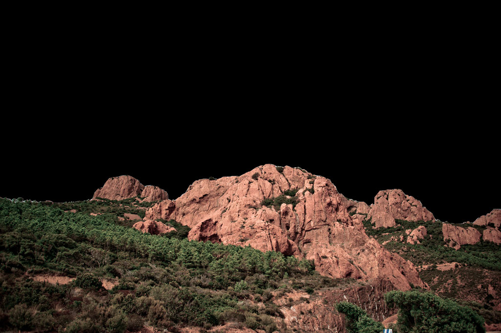

Landscape - good example, lots of pixels and colors
Original Photo (450KB)
Desired PNG (867KB)
JPEG (136KB)
PNG Mask (9KB)

Get low profile transparent photos with JPEGs, 32-bit PNGs and a little bit of Javascript + Canvas

Note: Canvas is needed. IE8 and lower will rollback to use a plain (and huge) transparent PNG from the attribute data-original
Too few pixels, less than 150 colors, it's best to use a plain PNG